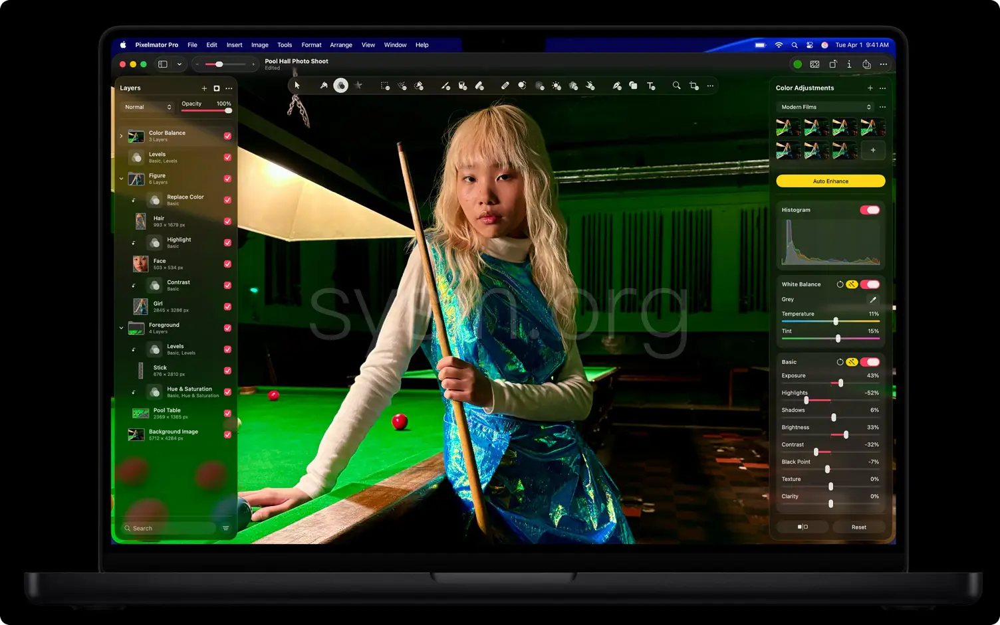

请访问原文链接：Apple Pixelmator Pro 4.3 - 专业图像编辑工具 查看最新版。原创作品，转载请保留出处。
作者主页：sysin.org
Pixelmator Pro
出手出神图
有了 Pixelmator Pro，轻轻松松就能跨 Mac 和 iPad 来修图，或画出亮眼大作。它满载众多强大功能，可助你打造出色作品，还能与 Apple Creator Studio 中的其他精彩 app 联手协作。

Apple Creator Studio
Creator Studio 全套神技超值集合，为各路创作人而来。
Pixelmator Pro 是 Apple Creator Studio 这套精选创意 app 中的一员，套装中还包括了 Final Cut Pro 和 Logic Pro 等众多利器。

新增功能
Pixelmator Pro 4.3，2026 年 7 月 1 日
内容中心 — 现内置于 Pixelmator Pro
- 在内容中心探索高质量照片、图形、形状、插图等
- 查看专家甄选的内容合集，更快找到灵感
- 从内容中心插入照片、图形、形状和插图作为独立图层，或者快速替换模板和设计模型中的占位符
- 使用矢量工具、样式工具等编辑插入的矢量图形和形状并自定义其路径
通过生成式 AI 进行高级图像创建和编辑 — 现内置于 Pixelmator Pro*
- 使用强大的生成式 AI 模型直接在设计中创建精美图像和图形
- 描述目标图像，选取风格，即可生成高分辨率的自定义图像
- 使用“基于图像生成”仅通过描述即可对图像进行简单编辑，也可将图像完全变换为所能想象的任何内容
形状生成*
- 基于简单文本描述生成自定义矢量形状，然后轻松探索形状变体
- 使用全套矢量控制精修生成的形状，精准打造理想形状
- 随时在“形状”浏览器中轻松查找之前生成和插入的形状
将 Pixelmator Pro 与 Keynote 讲演、Pages 文稿和 Numbers 表格搭配使用
- 将 Keynote 讲演、Pages 文稿或 Numbers 表格中的图像直接发送到 Pixelmator Pro，使用喜爱的工具进行编辑，然后将其直接保存回文稿
- 随时对图像进行额外调整，同时完整保留所有图层、编辑和效果
辅助功能改进
- 借助增强型"切换控制"和"旁白"支持，直接在画布上导览图层并与之交互
- 从当前图层选择中无缝添加或移除图层
*需要 macOS 或者 iPadOS 26 或更高版本，以及搭载 Apple 芯片的 Mac 或 iPad
来了解一下 Pixelmator Pro
创意影像创作
重新构想，图像焕然新生。
一系列强大的创意效果、调整项和工具，
给你各种全新方式来表达自我。
叠加图层，叠出无限可能。
通过非破坏性编辑功能，可自由尝试各种效果、填充、描边和阴影，改主意了也能轻松恢复原状，不会影响图片画质。

60 多种灵活多样的效果。
模糊、扭曲、锐化、平铺、半色调等众多效果随心混搭 (sysin)，实现你设想的风格。

调校色彩，精准度超高。
先进的工具配合调整图层，让你可按范围或选区编辑颜色，然后再微调个别颜色，营造出精致细腻的色彩搭配和色调。

智能蒙版。
选择和蒙版功能可精细检测边缘，像发梢这类细微之处也没问题，从而为你创建干净利落的蒙版，省去了手动勾绘主体轮廓这一繁琐步骤。

全面支持 RAW 格式照片。
将 RAW 格式照片添加为图层，无需转换格式或预处理，即可直接编辑。

视频润饰好轻松。
和编辑图片一样，处理视频也能运用图层，添加蒙版、裁剪画面或是更改颜色 (sysin)，调整什么都简单。

智能功能
奇妙工具，专配奇思妙想。
内置智能功能帮你处理耗时任务，让你放心放手，全神贯注去创作。
放大，照样清晰夺目。
超分辨率功能会分析图像并自动提升分辨率，从而保持画面锐利，甚至能增强细节，即使放大来看也一样清晰。

移除背景，点一下就行。
借助可随时调整的蒙版，就能轻松分离主体或隐藏背景。

飞快提升画质。
去色带功能让色彩过渡更自然，还能去除压缩伪影，同时无损保留更微小的细节。

自动增强。
先应用自动编辑效果，再按个人想法进一步精修，修图当然快人一步。

裁切美图，速度超快。
自动裁剪功能会建议出色构图，自动校正功能还能帮你将画面调正。你也可根据照片宽高比，选择合适的现成尺寸。

修图
每张照片，都能变身耀眼大片。
多种强大工具在手，照片精修得心应手，瞬间去除杂乱元素 (sysin)，张张精致亮眼。
修复工具。
快速去除尘点、瑕疵、干扰元素，甚至整个物体，让图片更显完美。
▶️ 点击观看视频演示


克隆图章工具。
轻松拷贝像素来消除干扰元素、修复区域，或复制纹理，获得理想的画面。

更智能的选择工具。
轻松选取主体，或借助一系列工具，一点就能分离并编辑特定区域。

画笔式润饰工具。
运用笔触精细调整画面局部，实现变亮、变暗、锐化、柔化、饱和度提升或降低等效果。

选择性清晰度功能。
分别调整阴影、中间色调和亮部的清晰度和纹理，恰到好处地提升画面效果。

智能降噪。
消除照片中的相机噪点，操作更快更简单。

设计
惊艳，精细入微。
强大的图层式编辑功能、可自定义的工作区、广泛的文件格式支持，样样顺心顺手，工作起来灵活自如。
图层式编辑。
将作品中的视觉元素整理成图层，处理流程得以简化，还能在复杂项目中进行非破坏性更改和编辑。

变形工具。
可沿任意方向推拉图像的特定区域，还可修复细微瑕疵，或对画面进行大幅度变形。

智能参考线。
排列工具可干脆利落地将各个图层智能移动到位，甚至能帮你自动对齐和分布图层。

精美的模板和设计模型。
从效果惊艳的模板开始创作，内容涵盖社交媒体和平面设计 (sysin)。你只要将图像拖放到球衣、杯子或其他预设对象上，就能直观查看设计的真实效果。

可自定义的工作区。
自由调整边栏，重构专属工具列表，你可在现成的内置工作区里选一个，也可随心自建。

广泛的文件格式支持。
Pixelmator Pro 支持众多栅格、矢量、视频和照片文件格式，包括超过 750 种 RAW 格式。

矢量图形
随意缩放不失真。
Pixelmator Pro 支持多种流行的矢量文件格式，并包含大量可轻松自定义的智能形状，让你的作品无论尺寸大小，都一样****出彩。
各类预设形状。
在你的构图中添加各种各样的形状，这些都是现成可用的，你还能快速调整大小、颜色和样式。

从头起笔绘制形状。
借助钢笔工具，你可以通过添加锐化或平滑的定位点 (sysin)，精准绘制矢量形状或路径。也可以自由发挥，就像用笔在纸上画画。

路径输入工具。
让你输入的文字可沿任何形状排列 (sysin)，或使用圆形输入工具制作出沿曲线或环形排列的文字。

文字版式设计。
字样、字号和颜色都可自定，还可突出重点、微调对齐方式和间距，以及运用连字和字形等进阶功能。

矢量文件格式支持。
Pixelmator Pro 支持 PSD、SVG、PDF、Adobe Illustrator 和 Illustrator EPS，便于你在这些格式的文件中编辑形状和路径，并在导出时保留矢量数据。

iPad
创作一路随行。
iPad 版 Pixelmator Pro 支持多点触控和 Apple Pencil，灵感一触即发；而 iPad 轻巧便携的设计，让你能随时随地轻松挥洒创意。

可在画布上直接调用的控件，加上可全面自定义的工作区，让你能得心应手地用轻点、捏合和轻扫等熟悉的手势，
完成台式电脑级的设计创作。

原生支持 Apple Pencil，可实现精准的编辑操作和压力感应，上手创作流畅自然2。
影像创作有 Apple
为设计，协同一致。
Mac 和 iPad 都能发挥 Pixelmator Pro 的种种优势，还有速度超快的 Apple 芯片加持，助你捕捉随时闪现的灵感。

创作时可切换使用 Mac 和 iPad，每项编辑操作都会顺畅同步在两部设备上。

借助通用剪贴板，可在 Mac 和 iPad 之间轻松拷贝粘贴图层。

Mac 和 iPad 能共用一套键盘和鼠标，便于在不同屏幕间拖拽文件。切换设备时，编辑内容也会保持同步。

Pixelmator Pro 的强大本领在照片 app 中也能出色发挥，就像是带给你一个功能完备的修片工作室，无论是处理照片图库还是整理相簿等，都轻松简单。
下载地址
Mac App Store：https://apps.apple.com/app/pixelmator-pro-edit-images/id6746662575
Pixelmator Pro CS 4.0 Universal Multilanguage
- 百度网盘链接：
[EoD] - 系统要求：macOS Tahoe 26.0 or later
Pixelmator Pro CS 4.2 Universal Multilanguage
- 百度网盘链接：
[EoD] - 系统要求：macOS Tahoe 26.0 or later
Pixelmator Pro CS 4.3 Universal Multilanguage
- 百度网盘链接：https://pan.baidu.com/s/1vEyY7-jEmsXCeZAEN8Tq7w?pwd=sr7q
- 系统要求：macOS Tahoe 26.0 or later
相关产品：Photomator 3.4.14 macOS Universal - 技术领先的照片编辑软件

文章用于推荐和分享优秀的软件产品及其相关技术，所有软件默认提供官方原版（免费版或试用版），免费分享。对于部分产品笔者加入了自己的理解和分析，方便学习和研究使用。任何内容若侵犯了您的版权，请联系作者删除。如果您喜欢这篇文章或者觉得它对您有所帮助，或者发现有不当之处，欢迎您发表评论，也欢迎您分享这个网站，或者赞赏一下作者，谢谢！
 支付宝赞赏
支付宝赞赏  微信赞赏
微信赞赏赞赏一下
敬请注册！点击 “登录” - “用户注册”（已知不支持 21.cn/189.cn 邮箱）。 请勿使用联合登录（已关闭）。